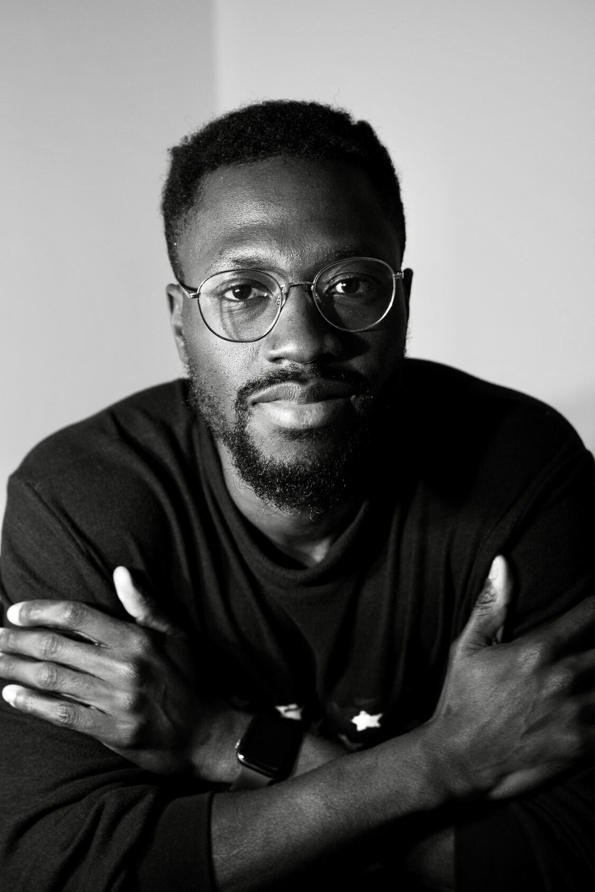

I am currently a PhD researcher in the Computational Mathematics group under
the supervision of Daniel
Ruprecht and Sebastian Götschel .
My primary field of research interest is Artificial Intelligence (AI).
Within AI, I am interested in problems related to machine learning,
data mining and their interdisciplinary applications to parallel-in-time
methods for time-dependent PDEs.
My current research is exploring machine learning-based parallel-in-time methods to solve unsteady nonlinear problems more efficiently. The approach is broadly applicable but we consider as an example, the nonlinear Black-Scholes equation, which may be used to value financial options and to calculate implied volatilities.
My research interests are in (but are not limited to)
-
Machine and Deep Learning for PDEs
-
Artificial Intelligence
-
Parallel-in-time
-
Numerical Methods
-
Computational Finance
-
Computational Fluid Dynamics
-
Molecular and Systems Biology
Here you find my Official University page
E-mail: abdul.ibrahim(at)tuhh.de
Publication(s)
-
Debia Wakhloo, Scharkowski, Franziska, Abdul Qadir Ibrahim et al., Functional hypoxia drives neuroplasticity and neurogenesis via brain erythropoietin, , Nature Communications 11, Article number: 1313 (2020), 2020.
Biography
Positions
- 2019-2021: Genevention GmbH, Göttingen, Werkstudent Machine Learning Researcher
- 2019-2019: Institute For Advanced Studies , Vienna, Werkstudent Data Scientist and Software Developer
- 2018-2019: Institute of Medical Systems Biology (IMSB), Hamburg, Werkstudent Machine Learning Researcher
- 2017-2018: DZNE Göttingen, Werkstudent Data Analyst in Bioinformatics
- 2014-2017: Vodafone, Senior Fullstack Software Developer
- 2013-2014: Vodafone , Vodafone Discover Graduate Programme
Past Teaching
- Advanced Statistical Data Analysis - Georg-August Universität Göttingen
- Python Data Analysis for Biologists - ZMNH/University of Hamburg
Degrees
- Ongoing: Hamburg University of Technology, PhD in Mathematics
- 2020: Georg-August Universität Göttingen, MSc in Mathematics
- 2013: Kwame Nkrumah University of Science & Technology, BSc in Mathematics
-
Thesis: Boundary layer enriched Hybrid Discontinuous Galerkin Methods for
Convection dominated flow
-
Thesis: Machine Learning Image analysis for the Prognosis of Malignant Melanoma.
Conferences/Talk
-
2023: Workshop on Computational Science
and Engineering (CSE 2023)
Kiel University, Hamburg University of Technology (TUHH), University of Hamburg (UH)
Gross Schwansee, Germany - 2022: The Mathematics
of Machine Learning Workshop
Basque Center for Applied Mathematics - (BCAM)
Basque Country, Spain - 2022: Summer School for Machine Learning in
Engineering
Hamburg University of Technology (TUHH)
Hamburg, Germany - 2022: PinT 11th
Conference on Parallel-in-Time Integration
Jean-Morlet Chair, The Centre International de Rencontres Mathématiques (CIRM)
Marseille, France - 2019: Deep Learning in PDEs: A Mathematical Approach
Speaker: Department of Mathematics, Georg-August Universität Göttingen
Göttingen, Germany
Memberships
- Society for Industrial and Applied Mathematics (SIAM)
- Gesellschaft für Angewandte Mathematik und Mechanik (GAMM)
Interests/Hobbies
- Basketball (Any team Lebron James is on), Soccer (#HalaMadrid, #Phobia), American Football, Creative Writing, Skateboarding, Chess, Photography.